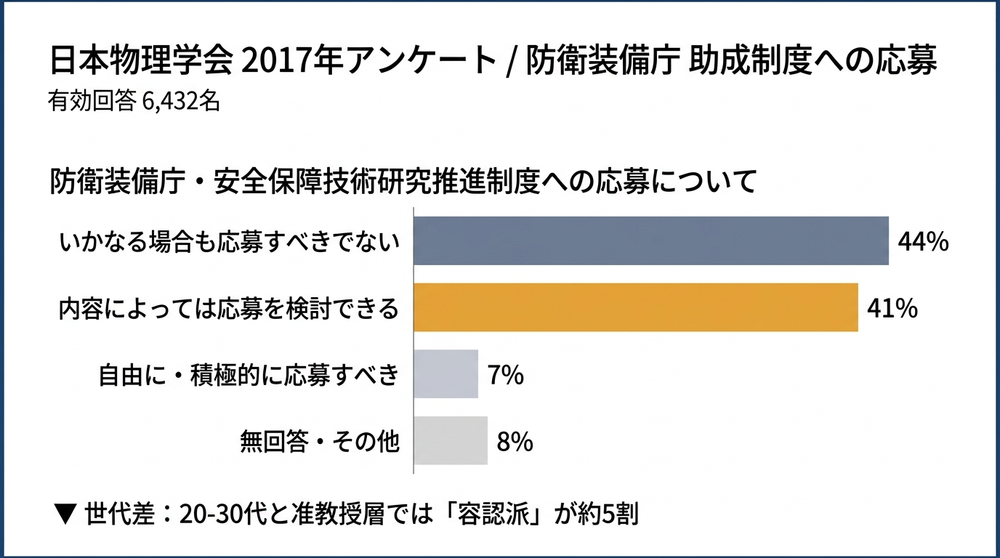
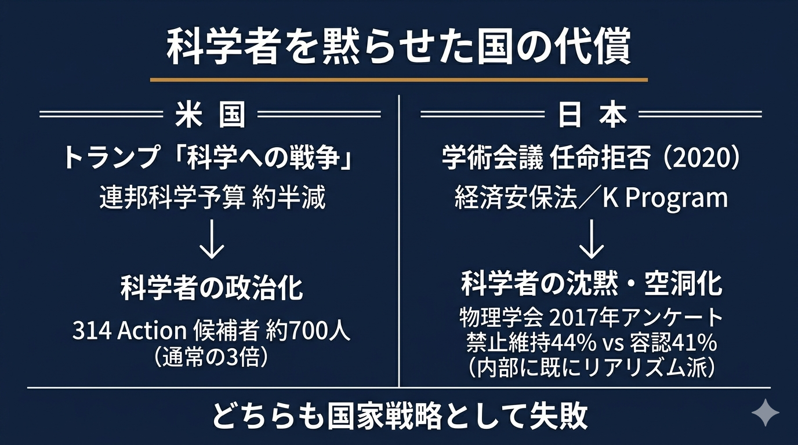

科学者は政治の外にいる方が幸せだ。研究室にこもり、データに向き合い、論文を書く。それが彼らの本分であり、社会もそれを尊重してきた。
だが、その合意は、もう成立しない。
英ガーディアン紙は四月三十日付の社説で、ドナルド・トランプの「科学への戦争」を批判した。連邦科学予算を約半減させた政権に対し、科学者団体「314 Action」を通じて公職選挙に立候補した研究者は約七百人。通常の三倍に膨れ上がった。同紙は「トランプは科学者を飼い慣らそうとして、結果的に政治化させた」と総括した。
逆向きの現象が、日本で進行している。
2020年の日本学術会議任命拒否以降、日本の科学者コミュニティは表向き静かになった。声を上げる学者は減り、政府との論戦は萎縮した。保守側がこれを「成功」と受け止めるなら、判断を誤る。沈黙は服従ではない。
物理学会六千四百三十二人の声
2017年、日本物理学会は会員六千四百三十二人を対象に、軍事研究をめぐる大規模アンケートを実施した。結果は、保守側の認識を裏切るものだった。1959年以来の「軍事研究禁止」方針の維持を支持した会員は四十四%。修正または廃止すべきとした回答が三十三%、判断保留が二十三%。防衛装備庁の安全保障技術研究推進制度への応募についても、「いかなる場合も応募すべきでない」が四十四%に対し、「内容によっては応募を検討できる」が四十一%。三%差で並んでいた。

世代差はさらに鋭い。二十代から三十代の若手と准教授層では、「内容によっては応募を検討できる」が約五割に達した。シニア層が歴史的経緯にこだわる一方、現場の若手は研究費削減という生活の現実と向き合っていた。
自由記述には、若手研究者の悲鳴に近い声が並んだ。「基礎研究費が枯渇する中で、防衛装備庁の資金だけを汚い金として排除するのは現実的ではない」「内容が基礎物理であれば、出口がどうあれ受け入れるべきだ」。シニア層からは「一度でも防衛資金を受け入れれば、研究の方向性は軍事ニーズに規定され、学問の独立性は失われる」という反論が並んだ。世代間の対話そのものが、すでに難しくなっていた。
つまり、科学者コミュニティの内部には、すでにリアリズム派が存在していた。一枚岩で軍事研究を拒否する集団ではない。自分たちで対話と合意形成を進めようとしていた集団だった。
その動きを上から潰したのが、学術会議任命拒否だった。
動機は正しい、手法が誤った
保守政権の動機自体には、正当性がある。1950年・1967年と続く軍事研究禁止声明は、技術の軍事利用を一律排除する左派リベラル的な思想に立脚していた。AIの軍事応用、サイバー領域での情報収集強化、武器輸出三原則の撤廃が現実化した世界で、その思想はもはや国家戦略として成立しない。保守政権が科学者コミュニティの「過度なイデオロギー」に違和感を持つのは、当然の感覚だ。
問題は手法にある。任命拒否は、科学者コミュニティ全体への不信表明として受け取られた。理性的な対話の余地を消し、内部のリアリズム派の発言基盤まで奪った。
しかも、この動きを支えた論理は、安全保障と機密管理を最優先する実務派の発想に強く傾いていた。情報の秘匿と防諜を軸に動く論理で、科学者コミュニティの内在的論理を理解するのは難しい。国民一般の納得感も得にくい。
国家情報局へと続く論理
同じ論理は、現在進行中の国家情報局創設の議論にも通底している。対外情報機関を整備すること自体には、国家戦略上の合理性がある。だが、その情報収集と分析の眼差しが国内に向かい、コミュニティ内に「反権力」の要素を見出して可視化・排除する方向へ振れたとき、国民の不安は一気に膨らむ。学術会議任命拒否は、その不安の予兆として記憶されている。科学者コミュニティに「反権力」を発見しようとする思惑は、保守政治への信頼そのものを蝕みかねない。
代償は、すでに見え始めている。
物理学会自身が指摘したように、軍事研究を厳格に禁止すれば、研究は「地下に潜る」。学術会議声明が促した大学の倫理審査も、形式的なチェックに留まるか、過剰な忖度で有益な基礎研究まで止めるかの両極端に振れる。経済安全保障推進法に基づくK Programなど、政府が本気で先端技術への投資を進めようとしても、現場の科学者が表立って動かない構造ができてしまった。
沈黙した科学者は、いざというときに国家のために動かない。これが米国との決定的な違いだ。トランプの米国は、科学者を敵に回して政治化させた。日本は、科学者を沈黙させて空洞化させた。どちらも国家戦略として失敗である。

第三の解は対話である
ここから抜け出す道は、第三の解しかない。
政府と科学者コミュニティのあいだに、理性的な対話の場を構築すること。学術会議の改編、経済安保法、K Programの運用について、科学者側からも合理的な批判と提案を出せる回路を制度化すること。AI兵器の自律性、情報収集の越境性、武器輸出の連鎖。倫理的歯止めの議論は消えない。歯止めなき科学は、保守の国家観そのものを破壊する。機密管理を優先する論理だけで進めれば、必ずどこかで詰まる。
高市保守政権は、この課題にどう向き合うか。
学術会議改革を継続するなら、同時に対話のチャンネルを開かなければ、米国の轍を踏むことになる。形式上は沈黙しているが、潜在的には「政治化予備軍」となった研究者は、若手を中心に増えている。物理学会六千四百三十二人の調査は、九年前のスナップショットに過ぎない。今同じ調査をすれば、若手の容認派はさらに増えているはずだ。彼らをどう国家戦略に組み込むかは、保守政権の手腕にかかっている。
日本が今問われているのは、科学を黙らせることでも、科学を政治化させることでもない。保守政治が科学者と理性的に向き合い、彼らを国家の資産として活用できるかどうかだ。